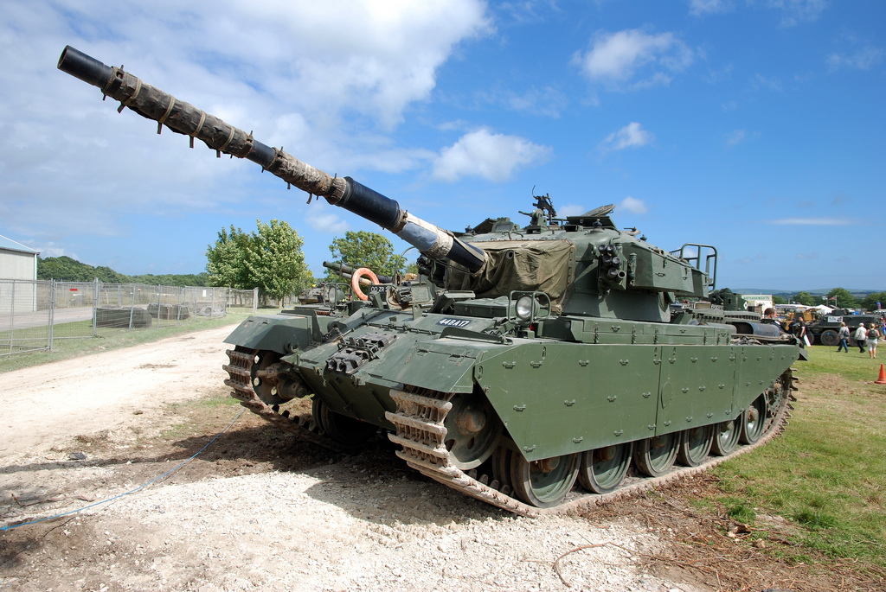
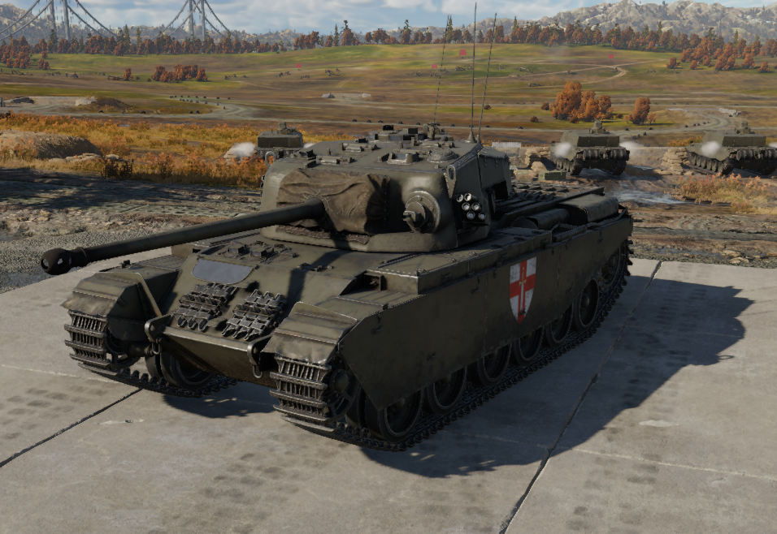
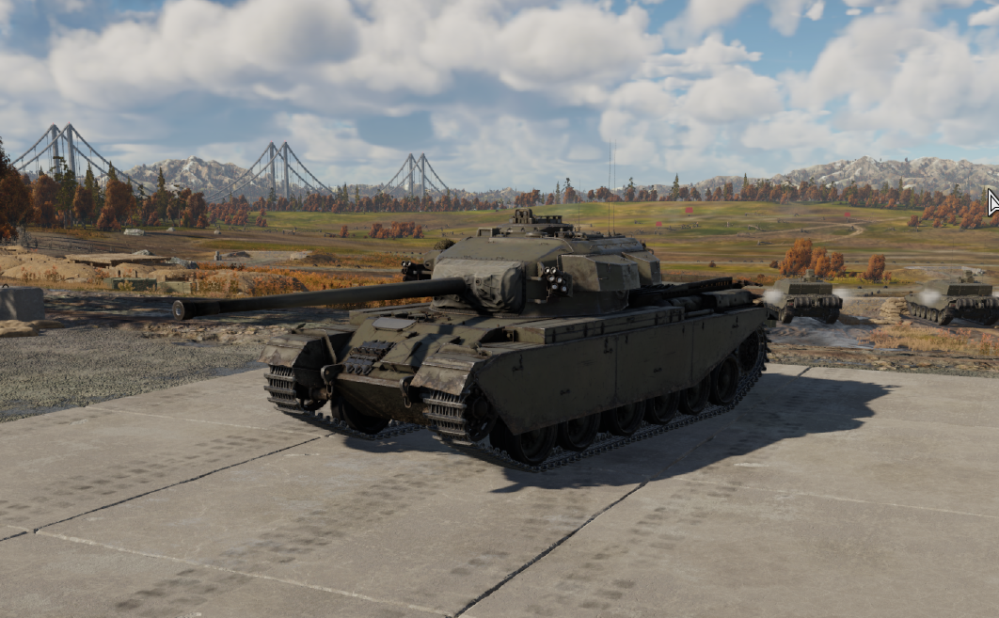
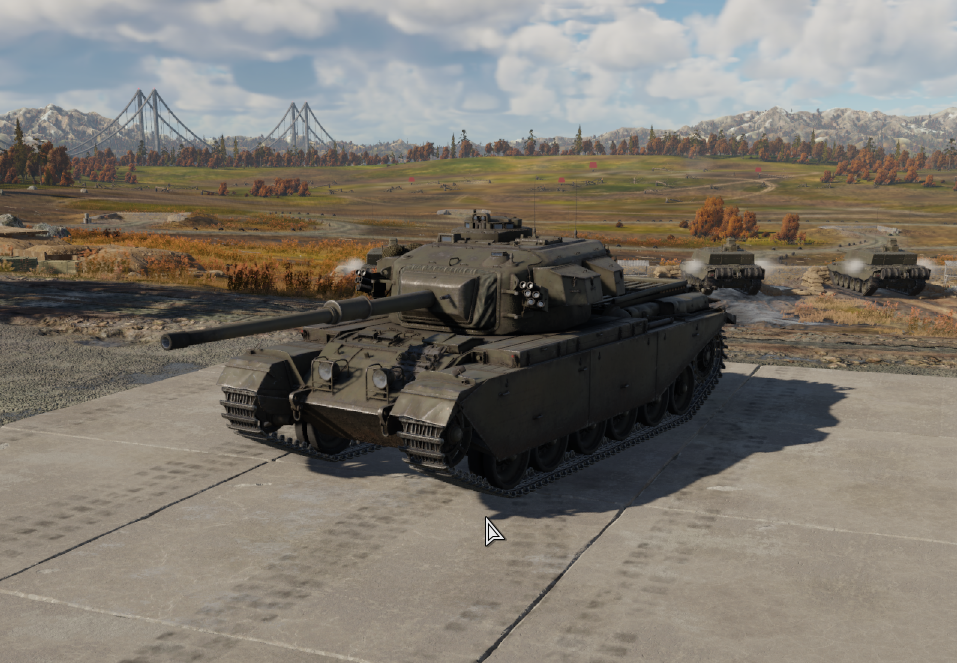

二戰時期，英國沿用30年代的想法，把戰車分成偵查用的輕型戰車，快速包抄的巡洋戰車以及偕同步兵作戰的步兵戰車。
由於此理論，導致英國在二戰中後期面對德國的虎式及豹式坦克，英國當時的主力巡洋戰車克倫威爾盡顯不足。
同一時期，英國開發出了QF17磅炮，可對虎式豹式產生威脅，英國便重新研發一種能安裝QF17磅炮的新型巡洋戰車，項目名稱為A41。
英國對此巡洋戰車的要求為火力及防護，導致了A41的機動性略顯不足，但倒退速度尚可。
最後A41原型車下線並經過各項性能測試，命名為「百夫長」。

百夫長的型號有好幾種，這邊挑出3種有重大改進的型號。
百夫長mk1，前裝甲厚度76公釐。車體側面與後部裝甲為38公釐。炮塔主裝甲厚152公釐。主炮為76.2公釐17磅炮。

百夫長mk3，主炮為新研製的QF 20磅炮（83.4公釐線膛炮）並配有火炮穩定儀。

百夫長mk10，同時增強裝甲並換裝L7戰車炮的Mark 8型稱為Mark 10。Mark 10/1型增加了紅外夜視儀和炮塔儲物籃；Mark 10/2型增加了測距槍。

百夫長mk3
| 重量 | 52公噸 |
| 長度 | 外殼25英尺(7.6公尺) (9.8公尺)(含砲管) |
| 寬度 | 11英尺1英吋(3.38公尺)(含側襯板) |
| 高度 | 9英尺10.5英吋(3.010公尺) |
| 乘員組 | 4人(車長，砲手，駕駛員，裝填手) |
| 裝甲 | 6英吋(15公分) |
| 主武器 | QF17磅炮 QF20磅炮 105mmL7線膛炮 |
| 副武器 | 白朗寧M1919中型機槍 |
| 發動機 | 勞斯萊斯流星引擎 650hp(450kw) |
| 功率/重量 | 13hp/t(匹馬力/公噸) |
| 懸掛系統 | 霍斯特曼懸掛 |
| 底盤高度 | 1英尺8英寸(0.51公尺) |
| 作戰範圍 | 280英里(450公里) |
| 速度 | 22mph(35km/h) |